Lines and Coordinate tab (Dimension Style and Dimension Properties)
Sets the line and coordinate options for dimensions. The Lines and Coordinate tab is available in the Dimension Style dialog box and in the Dimension Properties dialog box.
- Dimension Lines
-
Sets options for dimension lines.
- Connect
-
Controls whether the dimension line extends between both terminators when you place the dimension text and terminators outside the projection lines.
- Display
-
Controls the display of dimension lines on linear dimensions. You can set the display to off, origin, measurement, or origin and measurement. You can use this option to hide dimension lines when they overlap and you are using a pen plotter.
Note:Another way to control the display of a selected dimension line is using the Show Dimension Line command on the dimension formatting menu, which is displayed when you click the terminator handle of a dimension.
- Width
-
Sets the width of the dimension line.
- Stack pitch
-
Sets the distance between each dimension line in a stacked dimension group. The value is a ratio of the dimension text size.
- Initial stack distance
-
Sets the distance between the innermost dimension line in a stacked dimension group and the dimensioned geometry. The value is a ratio of the dimension text size.
Note:The Stack pitch and Initial stack distance options apply to dimensions that are stacked, for example, linear, angular, symmetric diameter, concentric diameter, arc length, and arc angle. The following commands read the current values for these options from the active dimension style:
-
Arrange Dimensions
-
Retrieve Dimensions
-
Auto-Dimension
-
- Break line
-
Sets the size of the break line for the dimension line. This value is a ratio of the text size.
- Apply Break Line Gap Only if Text Orientation is Horizontal and Text Position is Above
-
Helps control break line behavior when using different drawing standards, such as the GB standard.
- Projection Line
-
Sets options for the projection line of a dimension.
- Display
-
Controls the display of projection lines on linear dimensions. You can set the display to off, origin, measurement, or origin and measurement (both). You can use this option to hide projection lines when they overlap and you are using a pen plotter.
Note:Another way to control the display of a selected dimension projection line is using the Show Projection Line command on the dimension formatting menu, which is displayed when you select the terminator handle of a dimension.
- Element Gap
-
Sets how far the projection line is set back from the element you want to dimension. This value is a ratio of the dimension text size.
- Extension
-
Sets how far the dimension line extends beyond the dimension. This value is a ratio of the dimension text size.
- Angle
-
Sets the slant angle of the projection lines on dimensions.
- Break
-
Specifies the break gap distance applied to dimension projection lines broken with the Add Projection Line Break command. The value can be any nonzero number, which is multiplied by the text height. The default value is 1.
- Projection lines to virtual intersection points
-
Specifies that dimension projection lines are drawn to the implied intersection point of two lines or arcs, for example, where a chamfer or fillet was applied.
You can select None (the default), Measurement, Origin, or Both.
This option is available for linear and angular dimensions between 2D sketch elements in draft documents.
Example:Projection Line Display=None
Projection Line Display=Both
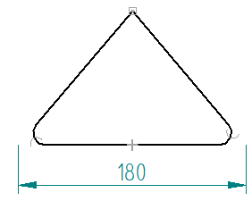
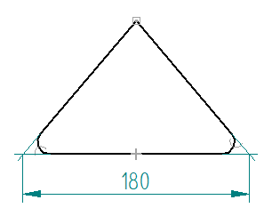
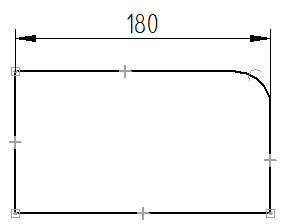
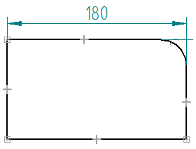
- Center Line/Mark
-
Sets options for centerlines and center marks placed with dimensioning commands.
- Center line type
-
Lists and applies the available centerline type. The default is a continuous line type.
- Line extension
-
Specifies the extent of the centerline.
- Center mark size
-
Specifies the height and width of a center mark. This value is a ratio of the dimension text size.
- Project center line
-
Displays the projection lines on a center mark.
- Coordinate
-
Sets options for coordinate dimensions.
- Common origin
-
Sets the symbol type for the common origin on coordinate dimensions. You can set the symbol type to dot, circle, or none.
Example:Circle
Dot
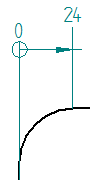
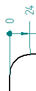
- Show coordinate origin text
-
Specifies whether to display the 0 label at the origin of the dimension set.
- Show origin dimension line
-
Displays the shortened form of the dimension line opposite the first value dimension. This can be used on detail views where the first dimension is not zero, and there may not be a source view on the sheet. For more information about how you can use this option, see Change the coordinate origin value.
This option applies to the ISO dimension style.
Example: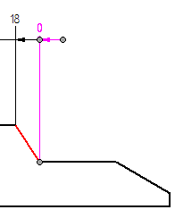
- Allow origin value change
-
Specifies that the origin dimension can be changed to a nonzero value without making it not to scale. Changing the origin value causes all of the coordinate dimensions in the dimension set that reference it to update also.
- Allow negative values
-
Specifies that dimensions to the left of the origin are negative. The definition of the left side of the origin is relative to the Orientation option (Horizontal/Vertical, Dimension Axis, or Use Coordinate System), and if you use a dimension axis, how you created the dimension line (left to right, or right to left).
Example:For a Horizontal/Vertical orientation, coordinate dimensions added to the left side of the origin dimension have negative values. Dimensions added to the right side are positive.
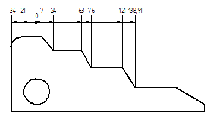
- Enable automatic jogging
-
Creates jogs and spaces the lines and text as the dimensions are placed.
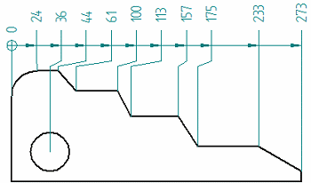
- Orientation
-
Sets the default orientation of coordinate dimension text with respect to the dimension line. The options are Perpendicular, Parallel, Horizontal, and Vertical.
- Text position
-
Sets the default position of dimension text (in-line or above) in a coordinate dimension.
- Diameter
-
Sets options for concentric diameter and symmetric diameter dimensions.
- Alternate text position
-
Specifies that the dimension text alternates position when you place multiple dimensions in a stack. This option makes it easier to read the dimension value in grouped or stacked dimensions.
If you move a dimension that was placed using alternating text positions, then that dimension is no longer maintained by the alignment group.
Example:Alternate text position=On
Alternate text position=Off
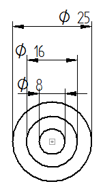
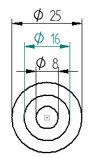
- Underline symbol and prefix
-
Extends the dimension line to include all of the dimension text, including the prefix and dimension symbol. This option applies to symmetric diameter dimensions that are created with the Dimension-Half/Full option set to
 =Half. Example:
=Half. Example:Underline symbol and prefix=on
Underline symbol and prefix=off
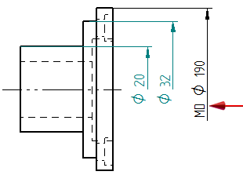
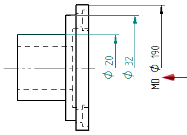
Note:This option applies to dimension text that is displayed over the dimension line (for example, the ISO style). It does not apply to dimension text that is embedded in the dimension line (for example, the ANSI style).
Look up more details
Dimension Properties dialog boxGeneral tab (Dimension Style and Dimension Properties)
Units tab (Dimension Style and Dimension Properties)
Secondary Units tab (Dimension Style and Dimension Properties)
Text tab (Dimension Style and Dimension Properties)
Spacing tab (Dimension Style and Dimension Properties)
Smart Depth tab (Dimension Style, Dimension Properties)
Terminator and Symbol tab (Dimension Style and Dimension Properties)
Annotation tab (Dimension Style and Dimension Properties)
Feature Callout tab